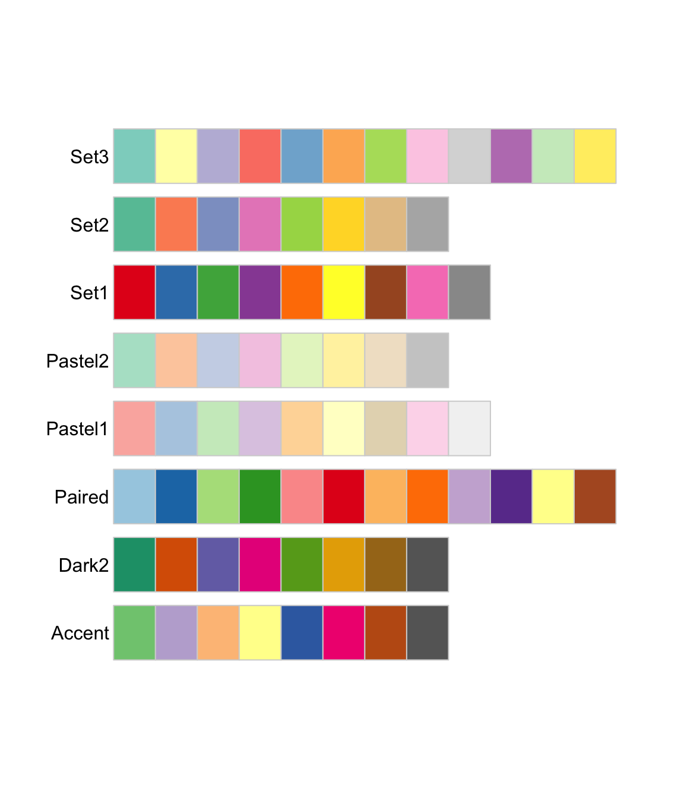
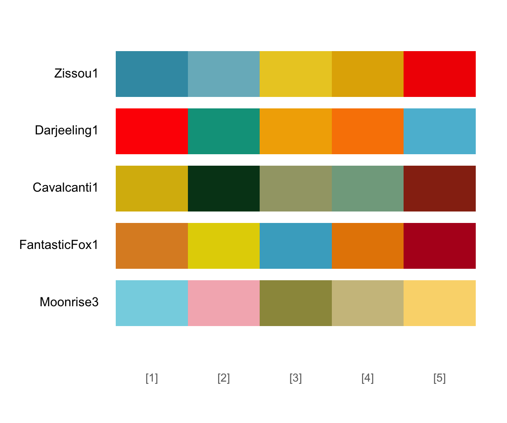

Economic Policy Visualization
Inflation · Colors
What exactly is inflation?
Inflation is the increase of the general price level in an economy which is usually expressed as annual percentage change in a price index. Inflation implies a decrease in purchasing power. The causes of inflation include:
Keynesian view
- Demand-pull inflation via increases of aggregate demand
- Cost-push inflation via drop in aggregate supply (supply-shock inflation)
- Built-in inflation via adaptive expectations (i.e. price-wage/profit spiral), e.g. Weber/Wasner (2023)
Monetarist view
- Money supply controls inflation
- Quantity theory relates the quantity of money (\(M\)) to the price level (\(P\)): \(M \cdot V = P \cdot Y\), with the velocity of money (\(V\)) being stable in the short-run.
- Rational expectations influence inflation
Inflation in economic policy
- Price stability (i.e. low or even now inflation) is an important goal for economic policy.
- It is also the main goal of the European Central Bank (ECB) which it aims to obtain with monetary policy. The ECB mid-term inflation target lies at 2% and is symmetric: meaning negative and positive deviations of inflation from the target are equally undesirable.
- Mix of fiscal (government spending, taxation, subsidies, etc.) and monetary (interest rate, quantitative easing) policies affect inflation in “normal times”.
- Potential triggers of current inflation: war, supply shortages due to the pandemics, CO2 taxation
Conflicting economic policy goals: Inflation and unemployment
A longstanding discussion in economic policy revolves around the (negative) relationship between inflation and unemployment. This has been expressed in the Phillips curve.
Keynesian view
Monetarist view
How do we measure inflation?
The most important measure is the Consumer prices index (CPI), which is based on a weighted average market basket of consumer goods and services purchased by households
For international comparison of price levels, Eurostat provides the Harmonised Indices of Consumer Prices (HICP) and the OECD calculates Purchasing Power Parities (PPP)
Other important indices include the Wholesale Price Index (WPI) and Producer Price Index (PPI).
Apart from price indices, the GDP deflator measures the general price level of all domestically produced goods and services.
How to construct the CPI in Austria?
- Household Budgetary Survey: survey on household consumption; every five years with roughly 7,000 households
- Consumer basket: 1958 only 197 goods and surveys, today 757 index positions
- COICOP: “Classification of Individual Consumption by Purpose” with 12 main groups
- Price information directly from companies (scanner data since 2022, cigarettes, etc.) and from inquiries in retail shops
- More than 38,000 prices surveyed monthly in 19 cities and 4,200 shops
Changes in the CPI in selected European countries
Inflation in Austria by selected COICOP groups
Drivers of inflation in Austria
Warning: Using `size` aesthetic for lines was deprecated in ggplot2 3.4.0.
ℹ Please use `linewidth` instead.All colours are beautiful
Colors in R
You can assign colors by names
- “red”, “green”, “chocolate”, “cadetblue”, etc.
- See a complete list of the 657 colors typing colors()
. . .
[1] "white" "aliceblue" "antiquewhite" "antiquewhite1"
[5] "antiquewhite2" "antiquewhite3" "antiquewhite4" "aquamarine"
[9] "aquamarine1" "aquamarine2" "aquamarine3" "aquamarine4" . . .
Alternatively, you can use hex color codes
- #F8766D, #00BA38, #619CFF, etc.
- Use color picker to get hex code, e.g. https://htmlcolorcodes.com
Color palettes of {RColorBrewer}
Sequential
Use to encode numerical information with order

Diverging
Use to encode numerical information with critical midpoint

Qualitative
Use to encode categorical information

Source: Scherer (2022)
Color blindness
You may check whether the color scale works for people who can distinguish fewer colours than others with {colorBlindness}.
Warning: The `guide` argument in `scale_*()` cannot be `FALSE`. This was deprecated in
ggplot2 3.3.4.
ℹ Please use "none" instead.
ℹ The deprecated feature was likely used in the colorBlindness package.
Please report the issue to the authors.
The viridis color scale is discriminable under the most common forms of colour blindness, and reproduces well in greyscale.

Fancy palettes
Welcome to unikn (v0.9.0)!grepal() searches for color names.
Registered S3 method overwritten by 'wesanderson':
method from
print.palette MetBrewer
Color scales in {ggplot}
scale_color_*
scale_fill_*
Continuous:
- continuous(type)
- distiller(palette)
- gradient(high, low)
- gradient2(high, mid, low)
- gradientn(colours)
- viridis_c(option)
Discrete:
- manual(values)
- brewer(palette)
- grey(start, end)
- viridis_d(option)
Bibliography
References
Scherer, Cédric (2022). Graphic design with ggplot2. https://rstudio-conf-2022.github.io/ggplot2-graphic-design/
Weber, Isabella M./Wasner, Evan (2023). Sellers’ inflation, profits and conflict: Why can large firms hike prices in an emergency? Review of Keynesian Economics, 11(2), 183–213. DOI: https://doi.org/10.4337/roke.2023.02.05
WuG Editorial board (2022). How to tackle the inflation crisis? Learnings from european case studies. Wirtschaft Und Gesellschaft, 48(4), 497–518.
Zuckerstätter, Sepp/Kafenda, Lukas/Muckenhuber, Mattias/Russinger, Reinhold (2022). Austria: Policies dealing with the inflation crisis. Wirtschaft Und Gesellschaft, 48(4), 578–598.